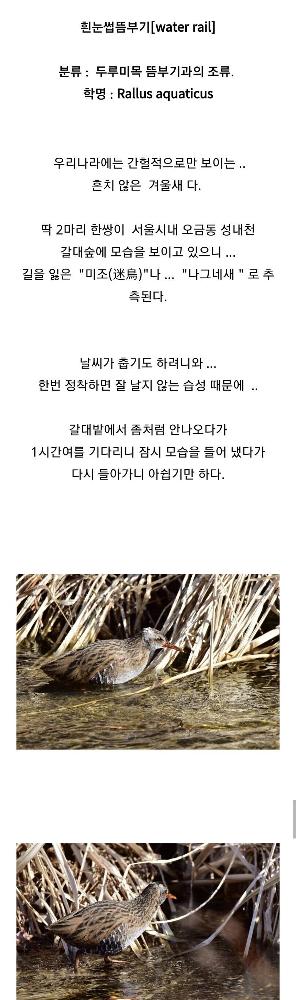
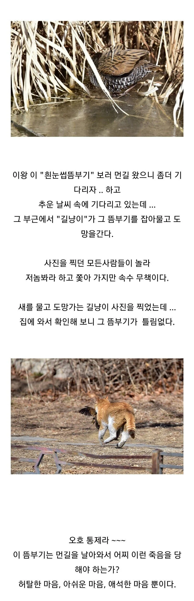

  서울에서 엄청 보기힘든 멸종위기 새 "흰눈썹뜸부기" 가 나타났다고 해서, 조류 동호회 회원들이 찾아가서 몇 시간을 기다렸는데 나타나자마자 길냥이한테 잡혀가서 죽임 당함....
댓글
수집 당시 댓글 5개
antianti · 1 일 전
뜸부기는... 죽은거지??!!!
포코 · 3 일 전
고양이 성역화
정상화의신 · 3 일 전
개씹좆냥이는 그냥 한국 야생에 존재하면 안되는 동물이라니까? 집안에만 있어야한다고
노란사탕 · 3 일 전
생태계 교란종으로 지정해서 사체1마리당 1만원씩 매입해줘야 뉴트리아처럼 박멸 될텐데
사람인데멍멍 · 3 일 전
캣맘들 냥발작 전화로 없던일이 되었습니다 -헬적화-